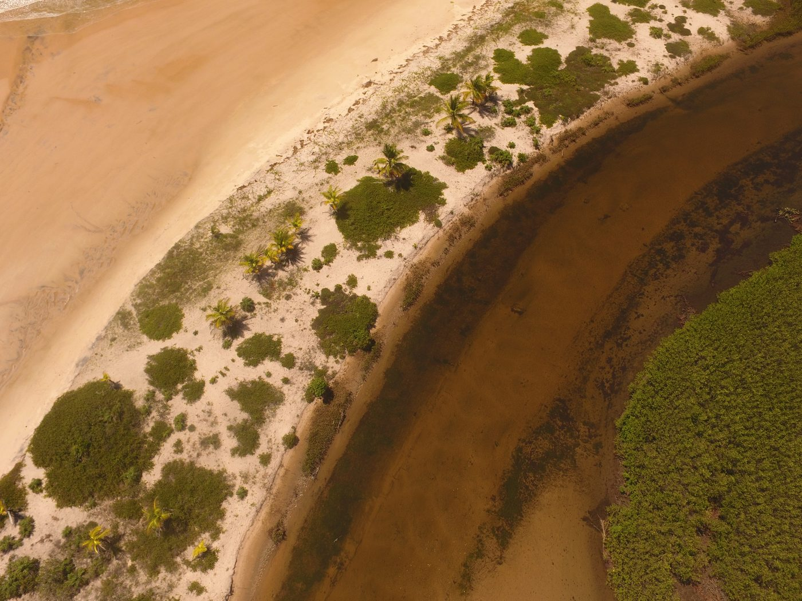

Dez anos de ativismo hídrico que se transformaram em movimento de transformação coletiva em Piracanga.
A Certificação Participativa Somos Água nasceu de duas perguntas essenciais: como criar sensibilização e corresponsabilização coletiva em torno da Água? Como percebê-la verdadeiramente como um ser vivo, sagrado e com direitos?
Inspirada nos Sistemas Participativos de Garantia (SPGs) da produção orgânica, a iniciativa foi incubada pela A.Mor e, em 2024, ganhou estrutura própria com a fundação do Instituto Somos Água.

Rio Piracanga · Vista aérea
Permacultora e educadora ecológica de formação e vivência, Juli é cofundadora da Universidade do Propósito e facilitadora da reconexão com a Natureza.
Criou a Plante Água — marca de produtos biodegradáveis — e o Templo das Águas, núcleo de soluções ecológicas e educação hídrica. Escreveu os livros Somos Água e Água Mãe.
@julisomosagua
Trazer maior reconhecimento institucional ao trabalho de cuidado das Águas.
Garantir continuidade a longo prazo para o projeto crescer e se replicar.
Ampliar e aprofundar as ações de aprendizagem sobre o cuidado com as Águas.

Ecovila Piracanga · Casas integradas à Mata Atlântica
A Ecovila Piracanga fica na Península de Maraú, a 250 km de Salvador, próxima de Itacaré (35 km) e Barra Grande (45 km). Está em área de proteção ambiental, à beira do Rio Piracanga e do oceano, ao lado do manguezal e em plena Mata Atlântica.
O lençol freático é raso — em alguns pontos a apenas 2 metros de profundidade — e abastece diretamente as casas. O solo é arenoso e de extrema permeabilidade, o que torna o saneamento ecológico uma necessidade real e urgente.
Antes uma fazenda de cocos abandonada, toda a área foi reflorestada nos últimos 15 anos. Um dos únicos lugares do mundo onde a ocupação humana trouxe regeneração — não degradação.
Água limpa garante saúde e bem-estar para todos.
Protege nascentes e ecossistemas que regulam o clima.
Educação ambiental transformadora por vivências práticas.
Preserva corpos hídricos conectados ao ambiente marinho.
Acesso à água limpa por gestão participativa dos recursos.
Conserva biodiversidade e regenera áreas de mata ciliar.
Uso consciente da água e práticas ecológicas no cotidiano.
Redes colaborativas e processos participativos de certificação.